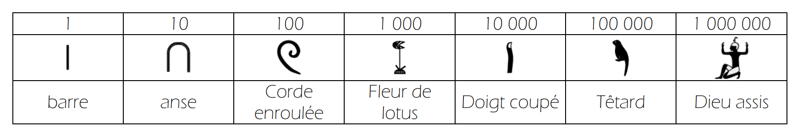
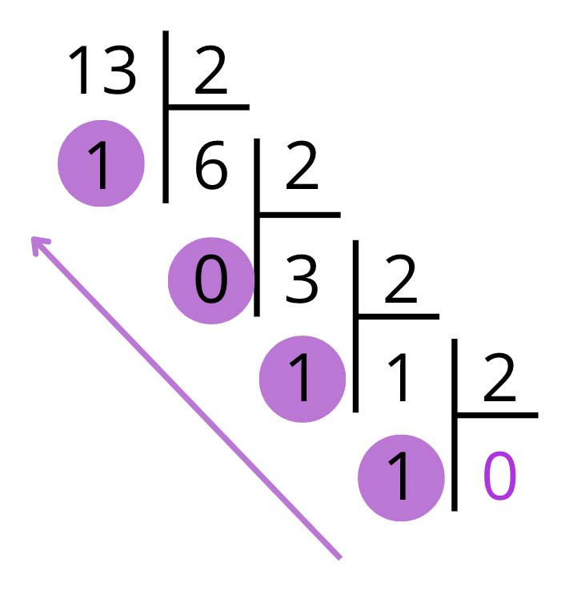
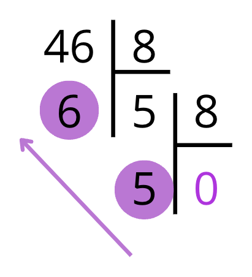
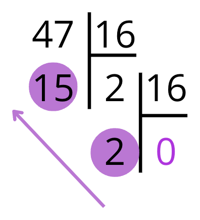
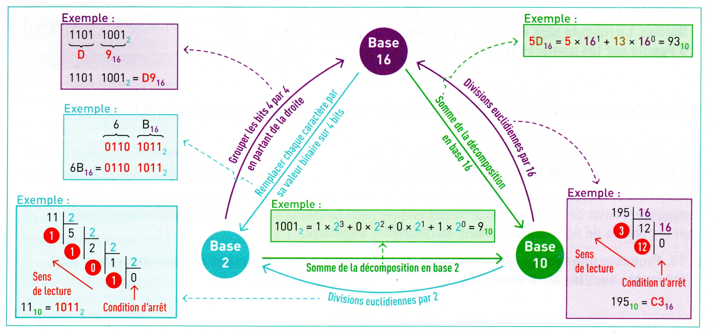

NSI Première · Chapitre 3
Compter, coder et calculer avec seulement des 0 et des 1
Introduction
Pour un ordinateur, nos chiffres décimaux n'existent pas tels quels : il ne connaît que deux états, 0 ou 1. Comment représente-t-il alors des nombres négatifs, des décimaux comme 3,14, ou effectue-t-il des calculs ?
les systèmes de numération : bases 2, 10 et 16.
coder les entiers positifs et négatifs.
coder les réels… avec certaines limites.
en binaire, presque comme à la main en base 10.
🔍 Bref, on entre dans les coulisses du cerveau de la machine !
NSI Première · Chapitre 3 — Représentation des nombres entiers
2
<Le monde se divise en 10 catégories>
<ceux qui comprennent le binaire>
<et ceux qui ne le comprennent pas>
À la fin du chapitre, vous comprendrez la blague 😉
Travaux dirigés
Avant que notre système ne s'impose partout, de nombreuses civilisations ont inventé leurs propres manières de compter. Le décimal n'est qu'un choix parmi d'autres !

Les hiéroglyphes égyptiens : un symbole par puissance de 10.
À vous de jouer
NSI Première · Chapitre 3 — Représentation des nombres entiers
4
1
Représenter un entier en base 2, 8, 10 et 16
Partie 1 · Les entiers naturels
NSI Première · Chapitre 3 — Représentation des nombres entiers
6
Partie 1 · Les entiers naturels
Quelle est la valeur de chacun des chiffres du nombre 343 ?
💭 Les deux chiffres 3 ont-ils la même valeur ?
Exemple
NSI Première · Chapitre 3 — Représentation des nombres entiers
7
Partie 1 · Les entiers naturels
Énoncé · Valeur de chaque chiffre de 343 ?
| Chiffre | Position (puissance de 10) | Valeur |
|---|---|---|
| 3 | centaines (10²) | 300 |
| 4 | dizaines (10¹) | 40 |
| 3 | unités (10⁰) | 3 |
343 = 3×10² + 4×10¹ + 3×10⁰
Le premier 3 vaut 300, le second vaut seulement 3 : c'est sa position qui compte.
Résolution
NSI Première · Chapitre 3 — Représentation des nombres entiers
8
Partie 1 · Les entiers naturels
Dans notre système, la position de chaque chiffre donne la puissance de 10 par laquelle on le multiplie. C'est très différent des systèmes rencontrés dans le TD :
Chaque symbole a une valeur fixe, qu'il soit placé avant ou après.
Les lettres s'ajoutent ou se soustraient, mais leur position n'a pas de poids multiplicatif.
NSI Première · Chapitre 3 — Représentation des nombres entiers
9
Partie 1 · Les entiers naturels
NSI Première · Chapitre 3 — Représentation des nombres entiers
10
Partie 1 · Les entiers naturels
1
0
1
1
0
1
0
1
← un octet : 8 bits
NSI Première · Chapitre 3 — Représentation des nombres entiers
11
Partie 1 · Les entiers naturels
NSI Première · Chapitre 3 — Représentation des nombres entiers
12
Partie 1 · Les entiers naturels
Ces bases suivent les mêmes règles que le système décimal… à une différence près : le nombre de chiffres utilisés.
| Base | Nom | Chiffres utilisés | Le nombre dix |
|---|---|---|---|
| 2 | Binaire | 0, 1 | 1010₂ |
| 8 | Octale | 0 à 7 | 12₈ |
| 10 | Décimale | 0 à 9 | 10 |
| 16 | Hexadécimale | 0 à 9, puis A à F | A₁₆ |
NSI Première · Chapitre 3 — Représentation des nombres entiers
13
Exercices
Page Exercices du site · corrections consultables après validation par l'enseignant.
| N° | Niveau | Thème |
|---|---|---|
| 1 | ★☆☆ | Les chiffres de la base 7 |
| 2 | ★☆☆ | Le plus grand chiffre en base 8 |
| 3 | ★☆☆ | La valeur du 5 dans 452 |
| 4 | ★☆☆ | Un chiffre propre à la base 16 |
| 5 | ★★☆ | Combien de nombres sur n bits ? |
| 6 | ★★☆ | Pourquoi la base 2 ? |
| 7 | ★★☆ | Les valeurs de A à F |
| N° | Niveau | Thème |
|---|---|---|
| 8 | ★★☆ | Nombres valides selon la base |
| 9 | ★★★ | 4 chiffres en base 4 |
| 10 | ★★★ | 538₆ est-il valide ? |
| 11 | ★★★ | Le champ TTL des paquets IP |
| 12 | ★★★ | Les 65 535 lignes d'un tableur |
| 13 | ★★★ | Lien entre bases 16 et 2 |
| 14 | ★★★ | Les adresses IPv6 |
💻 : sur ordinateur · les autres se font sur papier ✏️
Exercices
NSI Première · Chapitre 3 — Représentation des nombres entiers
14
Partie 1 · Les entiers naturels
NSI Première · Chapitre 3 — Représentation des nombres entiers
15
Partie 1 · Les entiers naturels
Convertir 1011₂ en base 10.
💭 Décomposer selon les puissances de 2, en partant de la droite.
Exemple
NSI Première · Chapitre 3 — Représentation des nombres entiers
16
Partie 1 · Les entiers naturels
Énoncé · Convertir 1011₂ en base 10.
| Rang | 3 | 2 | 1 | 0 |
|---|---|---|---|---|
| Chiffre | 1 | 0 | 1 | 1 |
| Puissance de 2 | 2³ | 2² | 2¹ | 2⁰ |
| Valeur | 8 | 0 | 2 | 1 |
1011₂ = 1×2³ + 0×2² + 1×2¹ + 1×2⁰ = 8 + 0 + 2 + 1 = 11
Résolution
NSI Première · Chapitre 3 — Représentation des nombres entiers
17
Partie 1 · Les entiers naturels
Convertir 3456₈ en base 10.
💭 Les puissances de 8 : 1, 8, 64, 512…
Exemple
NSI Première · Chapitre 3 — Représentation des nombres entiers
18
Partie 1 · Les entiers naturels
Énoncé · Convertir 3456₈ en base 10.
| Rang | 3 | 2 | 1 | 0 |
|---|---|---|---|---|
| Chiffre | 3 | 4 | 5 | 6 |
| Puissance de 8 | 8³ | 8² | 8¹ | 8⁰ |
| Valeur | 1536 | 256 | 40 | 6 |
3456₈ = 3×512 + 4×64 + 5×8 + 6×1 = 1536 + 256 + 40 + 6 = 1838
Résolution
NSI Première · Chapitre 3 — Représentation des nombres entiers
19
Partie 1 · Les entiers naturels
Convertir 2C8F₁₆ en base 10.
💭 Rappel : C vaut 12 et F vaut 15.
Exemple
NSI Première · Chapitre 3 — Représentation des nombres entiers
20
Partie 1 · Les entiers naturels
Énoncé · Convertir 2C8F₁₆ en base 10.
| Rang | 3 | 2 | 1 | 0 |
|---|---|---|---|---|
| Chiffre | 2 | C | 8 | F |
| Puissance de 16 | 16³ | 16² | 16¹ | 16⁰ |
| Valeur | 8192 | 3072 | 128 | 15 |
2C8F₁₆ = 2×4096 + 12×256 + 8×16 + 15×1 = 8192 + 3072 + 128 + 15 = 11407
Résolution
NSI Première · Chapitre 3 — Représentation des nombres entiers
21
Exercices
Page Exercices du site · corrections consultables après validation par l'enseignant.
| Exercice | Support | Niveau | Thème |
|---|---|---|---|
| 15 | ✏️ Papier | ★☆☆ | Du binaire vers la base 10 |
| 16 | ✏️ Papier | ★☆☆ | De l'hexadécimal vers la base 10 |
| 17 | ✏️ Papier | ★★☆ | Des binaires plus longs |
| 18 | ✏️ Papier | ★★☆ | ABCDE₁₆ en base 10 |
| 19 | ✏️ Papier | ★★☆ | De l'octal vers la base 10 |
| 20 | ✏️ Papier | ★★★ | Depuis les bases 5 et 13 |
Exercices
NSI Première · Chapitre 3 — Représentation des nombres entiers
22
Partie 1 · Les entiers naturels
C'est la méthode des divisions euclidiennes successives : plus rapide que de chercher les puissances de la base à la main.
NSI Première · Chapitre 3 — Représentation des nombres entiers
23
Partie 1 · Les entiers naturels
Convertir 13 en base 2.
💭 Divisions successives par 2, jusqu'à un quotient nul.
Exemple
NSI Première · Chapitre 3 — Représentation des nombres entiers
24
Partie 1 · Les entiers naturels
Énoncé · Convertir 13 en base 2.

13 = 2 × 6 + 1
6 = 2 × 3 + 0
3 = 2 × 1 + 1
1 = 2 × 0 + 1
Restes de bas en haut : 13 = 1101₂
✅ Vérification : 8 + 4 + 0 + 1 = 13
Résolution
NSI Première · Chapitre 3 — Représentation des nombres entiers
25
Partie 1 · Les entiers naturels
Convertir 46 en base 8.
💭 Même méthode : on divise par 8.
Exemple
NSI Première · Chapitre 3 — Représentation des nombres entiers
26
Partie 1 · Les entiers naturels
Énoncé · Convertir 46 en base 8.

46 = 8 × 5 + 6
5 = 8 × 0 + 5
Restes de bas en haut : 46 = 56₈
✅ Vérification : 5 × 8 + 6 = 46
Résolution
NSI Première · Chapitre 3 — Représentation des nombres entiers
27
Partie 1 · Les entiers naturels
Convertir 47 en base 16.
💭 On divise par 16… et un reste de 15 s'écrit F.
Exemple
NSI Première · Chapitre 3 — Représentation des nombres entiers
28
Partie 1 · Les entiers naturels
Énoncé · Convertir 47 en base 16.

47 = 16 × 2 + 15 → F
2 = 16 × 0 + 2
Restes de bas en haut : 47 = 2F₁₆
✅ Vérification : 2 × 16 + 15 = 47
Résolution
NSI Première · Chapitre 3 — Représentation des nombres entiers
29
Partie 1 · Les entiers naturels
Nous programmerons nous-mêmes des conversions, mais Python sait déjà les faire :
NSI Première · Chapitre 3 — Représentation des nombres entiers
30
Partie 1 · Les entiers naturels
Que renvoient ces instructions ?
bin(11) · hex(195) · int('1110', base=2) · int('1110', base=16)
💭 Faites la conversion à la main avant de regarder la réponse.
Exemple
NSI Première · Chapitre 3 — Représentation des nombres entiers
31
Partie 1 · Les entiers naturels
Énoncé · bin(11) · hex(195) · int('1110', base=2) · int('1110', base=16)
| Instruction | Renvoie | Ce qu'il faut lire |
|---|---|---|
| bin(11) | '0b1011' | 11 = 1011₂ |
| hex(195) | '0xc3' | 195 = C3₁₆ |
| int('1110', base=2) | 14 | 1110₂ = 8 + 4 + 2 = 14 |
| int('1110', base=16) | 4368 | 1110₁₆ = 4096 + 256 + 16 = 4368 |
Résolution
NSI Première · Chapitre 3 — Représentation des nombres entiers
32
Exercices
Page Exercices du site · corrections consultables après validation par l'enseignant.
| N° | Niveau | Thème |
|---|---|---|
| 21 | ★☆☆ | Vers les bases 2, 8 et 16 |
| 22 💻 | ★☆☆ | Vérifier avec bin et hex |
| 23 | ★★☆ | Vers les bases indiquées |
| 24 | ★★☆ | F₁₆ en base 10 et en binaire |
| N° | Niveau | Thème |
|---|---|---|
| 25 | ★★★ | 1000 en base 2 |
| 26 | ★★★ | 4095 en base 16 |
| 27 | ★★★ | Divisible par 10 en base 16 |
| 28 | ★★☆ | Hexadécimal ↔ binaire |
💻 : sur ordinateur · les autres se font sur papier ✏️
Exercices
NSI Première · Chapitre 3 — Représentation des nombres entiers
33
Partie 1 · Les entiers naturels
Comme en base 10 : colonne par colonne, de droite à gauche, en gardant la retenue.
| a | b | a + b | Retenue | Résultat |
|---|---|---|---|---|
| 0 | 0 | 0 | 0 | 0 |
| 0 | 1 | 1 | 0 | 1 |
| 1 | 0 | 1 | 0 | 1 |
| 1 | 1 | 2 | 1 | 0 |
| 1 | 1 + retenue | 3 | 1 | 1 |
NSI Première · Chapitre 3 — Représentation des nombres entiers
34
Partie 1 · Les entiers naturels
Calculer 1011₂ + 1101₂.
💭 Attention aux retenues : en binaire, 1 + 1 = 10₂.
Exemple
NSI Première · Chapitre 3 — Représentation des nombres entiers
35
Partie 1 · Les entiers naturels
Énoncé · Calculer 1011₂ + 1101₂.
1
1
1
1
1
0
1
1
+
1
1
0
1
1
1
0
0
0
Les retenues sont notées en orange au-dessus.
1011₂ + 1101₂ = 11000₂
✅ Vérification : 11 + 13 = 24 = 16 + 8 = 11000₂
Résolution
NSI Première · Chapitre 3 — Représentation des nombres entiers
36
Partie 1 · Les entiers naturels
La multiplication posée fonctionne exactement comme en base 10.
💡 En binaire, c'est facile : multiplier par 1 recopie le nombre, multiplier par 0 donne 0.
NSI Première · Chapitre 3 — Représentation des nombres entiers
37
Partie 1 · Les entiers naturels
Calculer 101₂ × 11₂.
💭 Une ligne par chiffre de 11₂, la deuxième décalée d'un cran.
Exemple
NSI Première · Chapitre 3 — Représentation des nombres entiers
38
Partie 1 · Les entiers naturels
Énoncé · Calculer 101₂ × 11₂.
1
0
1
×
1
1
1
0
1
+
1
0
1
1
1
1
1
101 × 1 = 101, puis 101 × 1 décalé d'un cran : 1010. On additionne.
101₂ × 11₂ = 1111₂
✅ Vérification : 5 × 3 = 15 = 8 + 4 + 2 + 1 = 1111₂
Résolution
NSI Première · Chapitre 3 — Représentation des nombres entiers
39
Partie 1 · Les entiers naturels
NSI Première · Chapitre 3 — Représentation des nombres entiers
40
Exercices
Page Exercices du site · corrections consultables après validation par l'enseignant.
| Exercice | Support | Niveau | Thème |
|---|---|---|---|
| 29 | ✏️ Papier | ★☆☆ | Additions sans retenue |
| 30 | ✏️ Papier | ★★☆ | Additions avec retenue simple |
| 31 | ✏️ Papier | ★★★ | Additions en base 2 |
| 32 | ✏️ Papier | ★☆☆ | Multiplications posées |
| 33 | ✏️ Papier | ★★☆ | Multiplications posées |
| 34 | ✏️ Papier | ★★☆ | Additions dans d'autres bases |
Exercices
NSI Première · Chapitre 3 — Représentation des nombres entiers
41
Partie 1 · Les entiers naturels

NSI Première · Chapitre 3 — Représentation des nombres entiers
42
Travaux dirigés
Dans une usine, un compteur stocké sur un octet affiche le nombre de pièces produites. Un jour, il affiche 21 alors que 277 pièces ont été produites…
Le service d'assistance répond que c'est normal ! Essayons d'expliquer ce qui est arrivé.
À vous de jouer
NSI Première · Chapitre 3 — Représentation des nombres entiers
43
2
Représenter des nombres négatifs uniquement avec des bits
Partie 2 · Les entiers relatifs
Un ordinateur ne manipule que des bits : il n'a pas de « signe moins » intégré. Il faut donc représenter les entiers négatifs uniquement avec des 0 et des 1.
1
0
1
1
0
↑ le bit de poids fort
NSI Première · Chapitre 3 — Représentation des nombres entiers
45
Partie 2 · Les entiers relatifs
Une première idée : utiliser un bit supplémentaire pour coder le signe.
0 → nombre positif
1 → nombre négatif
codée comme un entier naturel.
NSI Première · Chapitre 3 — Représentation des nombres entiers
46
Partie 2 · Les entiers relatifs
Coder +6 et −6 sur 5 bits avec la méthode du bit de signe.
💭 1 bit pour le signe, puis 4 bits pour la valeur absolue 6.
Exemple
NSI Première · Chapitre 3 — Représentation des nombres entiers
47
Partie 2 · Les entiers relatifs
Énoncé · Coder +6 et −6 sur 5 bits avec la méthode du bit de signe.
| Nombre | Bit de signe | Valeur absolue sur 4 bits | Écriture sur 5 bits |
|---|---|---|---|
| +6 | 0 | 0110 | 0 0110 |
| −6 | 1 | 0110 | 1 0110 |
Et 0 ? Il s'écrit 0 0000 (+0) et 1 0000 (−0) : deux écritures pour le même nombre 😬
Résolution
NSI Première · Chapitre 3 — Représentation des nombres entiers
48
Partie 2 · Les entiers relatifs
Exemple avec un octet (n = 8) : 1 bit de signe et 7 bits pour la valeur absolue, soit au plus 2⁷ − 1 = 127.
1111 1111
le plus petit : −127
0111 1111
le plus grand : +127
Sur un octet : de −127 à +127
NSI Première · Chapitre 3 — Représentation des nombres entiers
49
Partie 2 · Les entiers relatifs
NSI Première · Chapitre 3 — Représentation des nombres entiers
50
Exercices
Page Exercices du site · corrections consultables après validation par l'enseignant.
| N° | Niveau | Thème |
|---|---|---|
| 35 | ★☆☆ | Le bit de poids fort |
| 36 | ★☆☆ | Les positifs sur 4 bits |
| 37 | ★☆☆ | Que vaut 1011 ? |
| 38 | ★☆☆ | +6 sur 5 bits |
| 39 | ★☆☆ | 10000 vaut-il −16 ? |
| N° | Niveau | Thème |
|---|---|---|
| 40 | ★☆☆ | −4 sur 5 bits |
| 41 | ★★☆ | Les positifs sur 6 bits |
| 42 | ★★☆ | −1, 0 et +1 sur 4 bits |
| 43 | ★★☆ | La plage sur 5 bits |
| 44 | ★★★ | Pourquoi l'abandonner ? |
💻 : sur ordinateur · les autres se font sur papier ✏️
Exercices
NSI Première · Chapitre 3 — Représentation des nombres entiers
51
Partie 2 · Les entiers relatifs
Avant la méthode utilisée aujourd'hui, certains systèmes utilisaient une idée un peu plus simple :
NSI Première · Chapitre 3 — Représentation des nombres entiers
52
Partie 2 · Les entiers relatifs
Écrire −5 sur 4 bits avec le complément à un.
💭 Écrire d'abord 5 sur 4 bits, puis inverser chaque bit.
Exemple
NSI Première · Chapitre 3 — Représentation des nombres entiers
53
Partie 2 · Les entiers relatifs
Énoncé · Écrire −5 sur 4 bits avec le complément à un.
+5 sur 4 bits
0101
−5 : on inverse tout
1010
Chaque 0 devient 1, chaque 1 devient 0 : −5 s'écrit 1010 en complément à un.
Résolution
NSI Première · Chapitre 3 — Représentation des nombres entiers
54
Partie 2 · Les entiers relatifs
C'est pour résoudre ces problèmes qu'on ajoute +1 au complément à un : c'est le complément à deux.
NSI Première · Chapitre 3 — Représentation des nombres entiers
55
Partie 2 · Les entiers relatifs
C'est le système le plus utilisé aujourd'hui (souvent noté C2). Un entier est représenté sur un nombre fixe de bits (4, 8…) :
codés comme des entiers naturels classiques.
codés grâce à une transformation : le complément à deux.
NSI Première · Chapitre 3 — Représentation des nombres entiers
56
Partie 2 · Les entiers relatifs
NSI Première · Chapitre 3 — Représentation des nombres entiers
57
Partie 2 · Les entiers relatifs
Coder −5 sur 4 bits en complément à deux.
💭 Les trois étapes : coder 5, inverser, ajouter 1.
Exemple
NSI Première · Chapitre 3 — Représentation des nombres entiers
58
Partie 2 · Les entiers relatifs
Énoncé · Coder −5 sur 4 bits en complément à deux.
1 · Coder 5
0101
2 · Inverser
1010
3 · Ajouter 1
1011
Ainsi, −5 est représenté par 1011 en complément à deux sur 4 bits.
Résolution
NSI Première · Chapitre 3 — Représentation des nombres entiers
59
Partie 2 · Les entiers relatifs
NSI Première · Chapitre 3 — Représentation des nombres entiers
60
Partie 2 · Les entiers relatifs
Sur 4 bits, en complément à deux, que représentent 0110 et 1011 ?
💭 Commencer par regarder le bit de poids fort de chacun.
Exemple
NSI Première · Chapitre 3 — Représentation des nombres entiers
61
Partie 2 · Les entiers relatifs
Énoncé · Que représentent 0110 et 1011 (4 bits, complément à deux) ?
Bit de poids fort : 0 → positif.
On le lit comme un entier naturel :
0110₂ = 4 + 2 = 6
0110 représente +6
Bit de poids fort : 1 → négatif.
inverser : 0100
ajouter 1 : 0101 = 5
1011 représente −5
Résolution
NSI Première · Chapitre 3 — Représentation des nombres entiers
62
Partie 2 · Les entiers relatifs
| Bits | Plage représentable |
|---|---|
| 3 | de −4 à +3 |
| 4 | de −8 à +7 |
| 8 | de −128 à +127 |
| 16 | de −32 768 à +32 767 |
Un octet stocke tous les entiers de −128 à +127.
NSI Première · Chapitre 3 — Représentation des nombres entiers
63
Exercices
Page Exercices du site · corrections consultables après validation par l'enseignant.
| N° | Niveau | Thème |
|---|---|---|
| 45 | ★☆☆ | L'intérêt du complément à deux |
| 46 | ★☆☆ | Lesquels sont négatifs ? |
| 47 | ★☆☆ | 1000₂ vaut-il +8 ? |
| 48 | ★☆☆ | Coder sur 4 bits |
| N° | Niveau | Thème |
|---|---|---|
| 49 | ★★☆ | Décoder sur 4 bits |
| 50 | ★★☆ | Tous les entiers sur 3 bits |
| 51 | ★★☆ | −15 sur 5 bits |
| 52 | ★★☆ | De −1 à −5 sur 4 bits |
💻 : sur ordinateur · les autres se font sur papier ✏️
Exercices
NSI Première · Chapitre 3 — Représentation des nombres entiers
64
Partie 2 · Les entiers relatifs
NSI Première · Chapitre 3 — Représentation des nombres entiers
65
Partie 2 · Les entiers relatifs
Calculer 6 − 3 sur 4 bits en complément à deux.
💭 On calcule plutôt 6 + (−3).
Exemple
NSI Première · Chapitre 3 — Représentation des nombres entiers
66
Partie 2 · Les entiers relatifs
Énoncé · Calculer 6 − 3 sur 4 bits en complément à deux.
La retenue qui sort des 4 bits est ignorée : on lit 0011 = 3 ✅
(1)
1
0
1
1
0
+
1
1
0
1
0
0
1
1
Résolution
NSI Première · Chapitre 3 — Représentation des nombres entiers
67
Partie 2 · Les entiers relatifs
| Méthode | Principe | Problèmes rencontrés | Aujourd'hui |
|---|---|---|---|
| Signe + valeur absolue | 1 bit de signe, le reste = valeur | Deux zéros, opérations incorrectes | ❌ Obsolète |
| Complément à un | Inversion des bits | Ajustements lors de l'addition | ❌ Peu utilisée |
| Complément à deux | Complément à un + 1 | Peu intuitive, mais fiable | ✅ Standard |
NSI Première · Chapitre 3 — Représentation des nombres entiers
68
À retenir
Exercices
Page Exercices du site · corrections consultables après validation par l'enseignant.
| Exercice | Support | Niveau | Thème |
|---|---|---|---|
| 53 | ✏️ Papier | ★★☆ | Soustractions sur 4 bits |
| 54 | ✏️ Papier | ★★★ | 11101000 sur 8 bits |
| 55 | ✏️ Papier | ★★★ | −16 sur 5 bits : possible ? |
| 56 | ✏️ Papier | ★★★ | Coder et décoder sur 8 bits |
| 57 | ✏️ Papier | ★★★ | Combien de négatifs sur 7 bits ? |
Exercices
NSI Première · Chapitre 3 — Représentation des nombres entiers
70
3
Des nombres à virgule… avec un nombre fini de bits
Partie 3 · Les décimaux et les réels
Prix, mesures, temps, pourcentages… on manipule très souvent des valeurs avec une partie décimale. Comment les représenter avec un nombre fini de bits, quand elles peuvent avoir une infinité de décimales ?
des nombres décimaux en binaire.
certaines valeurs ne sont pas représentables exactement.
les conséquences sur les calculs.
la représentation flottante des ordinateurs.
🎯 L'objectif est de comprendre les limites, pas d'apprendre les normes par cœur. 😉
NSI Première · Chapitre 3 — Représentation des nombres entiers
72
Partie 3 · Les décimaux et les réels
NSI Première · Chapitre 3 — Représentation des nombres entiers
73
Partie 3 · Les décimaux et les réels
Convertir 6,25 en binaire.
💭 Séparer la partie entière (6) et la partie décimale (0,25).
Exemple
NSI Première · Chapitre 3 — Représentation des nombres entiers
74
Partie 3 · Les décimaux et les réels
Énoncé · Convertir 6,25 en binaire.
Partie entière : 6 = 110₂. Partie décimale : multiplications par 2.
0,25 × 2 = 0,5 → 0
0,5 × 2 = 1,0 → 1 ✅
La partie décimale est nulle : on s'arrête. Bits lus de haut en bas.
6,25 = 110,01₂
Résolution
NSI Première · Chapitre 3 — Représentation des nombres entiers
75
Partie 3 · Les décimaux et les réels
Convertir 0,75 en binaire.
💭 Partie entière : 0. Il reste à traiter 0,75.
Exemple
NSI Première · Chapitre 3 — Représentation des nombres entiers
76
Partie 3 · Les décimaux et les réels
Énoncé · Convertir 0,75 en binaire.
0,75 × 2 = 1,5 → 1
0,5 × 2 = 1,0 → 1 ✅
Partie entière 0 = 0₂ ; la partie décimale est nulle après deux étapes.
0,75 = 0,11₂
Résolution
NSI Première · Chapitre 3 — Représentation des nombres entiers
77
Partie 3 · Les décimaux et les réels
Convertir 0,1 en binaire.
💭 Que se passe-t-il au bout de quelques multiplications ?
Exemple
NSI Première · Chapitre 3 — Représentation des nombres entiers
78
Partie 3 · Les décimaux et les réels
Énoncé · Convertir 0,1 en binaire.
0,1 × 2 = 0,2 → 0
0,2 × 2 = 0,4 → 0
0,4 × 2 = 0,8 → 0
0,8 × 2 = 1,6 → 1
0,6 × 2 = 1,2 → 1
0,2 × 2 = 0,4 → 0 🔁
On retombe sur 0,2 : le calcul ne s'arrête jamais, le motif 0011 se répète.
0,1 = 0,0 0011 0011…₂
Résolution
NSI Première · Chapitre 3 — Représentation des nombres entiers
79
À retenir
Exercices
Page Exercices du site · corrections consultables après validation par l'enseignant.
| Exercice | Support | Niveau | Thème |
|---|---|---|---|
| 59 | ✏️ Papier | ★☆☆ | Des décimaux simples en binaire |
| 60 | ✏️ Papier | ★★☆ | 0,3 et 0,6 : multiplications successives |
| 61 | ✏️ Papier | ★★☆ | Représentable exactement ou non ? |
| 62 | ✏️ Papier | ★★☆ | 3,375 en binaire et une tension de 5,15 V |
Exercices
NSI Première · Chapitre 3 — Représentation des nombres entiers
81
Partie 3 · Les décimaux et les réels
Que répond Python ?
>>> 0.1 + 0.2 == 0.3
💭 Mathématiquement, 0,1 + 0,2 = 0,3…
Exemple
NSI Première · Chapitre 3 — Représentation des nombres entiers
82
Partie 3 · Les décimaux et les réels
Énoncé · Que répond Python à 0.1 + 0.2 == 0.3 ?
>>> 0.1 + 0.2 == 0.3
False
>>> 0.1 + 0.2
0.30000000000000004
Python ne trouve pas l'égalité ! 0,1 et 0,2 sont approchés en binaire, ce qui crée un petit décalage.
Résolution
NSI Première · Chapitre 3 — Représentation des nombres entiers
83
Partie 3 · Les décimaux et les réels
❌ À éviter : comparer avec ==
>>> a = 0.1 + 0.2
>>> a == 0.3
False
✅ Plus fiable : tolérer un écart epsilon
>>> abs((0.1 + 0.2) - 0.3) < 1e-9
True
NSI Première · Chapitre 3 — Représentation des nombres entiers
84
Partie 3 · Les décimaux et les réels
Pour coder un réel, l'ordinateur utilise un système proche de la notation scientifique :
31,4159 = 3,14159 × 10¹
On peut faire la même chose en base 2 : on représente ainsi des valeurs très grandes ou très petites avec un nombre limité de bits.
NSI Première · Chapitre 3 — Représentation des nombres entiers
85
Partie 3 · Les décimaux et les réels
Écrire 13,5 en binaire, sous la forme 1,… × 2ᵉˣᵖᵒˢᵃⁿᵗ.
💭 Convertir d'abord 13 et 0,5, puis déplacer la virgule.
Exemple
NSI Première · Chapitre 3 — Représentation des nombres entiers
86
Partie 3 · Les décimaux et les réels
Énoncé · Écrire 13,5 en binaire, sous la forme 1,… × 2ᵉˣᵖᵒˢᵃⁿᵗ.
13,5 = 1101,1₂ = 1,1011₂ × 2³
Signe + · mantisse 1011 · exposant 3
Résolution
NSI Première · Chapitre 3 — Représentation des nombres entiers
87
Partie 3 · Les décimaux et les réels
NSI Première · Chapitre 3 — Représentation des nombres entiers
88
Partie 3 · Les décimaux et les réels
La plupart des langages (Python, Java, C…) utilisent la norme IEEE 754, qui code les réels sur 32 bits (float) ou 64 bits (double) :
Float · 32 bits
S
1
Exposant
8 bits
Mantisse
23 bits
Double · 64 bits
S
1
Exposant
11 bits
Mantisse
52 bits
S : 1 bit de signe · l'exposant est stocké avec un biais · la mantisse porte la précision.
NSI Première · Chapitre 3 — Représentation des nombres entiers
89
À retenir
Exercices
Page Exercices du site · corrections consultables après validation par l'enseignant.
| Exercice | Support | Niveau | Thème |
|---|---|---|---|
| 58 | ✏️ Papier | ★☆☆ | Un calcul Python qui ne donne pas 0 |
| 63 | ✏️ Papier | ★★☆ | Le bogue de l'an 2038 |
Exercices
NSI Première · Chapitre 3 — Représentation des nombres entiers
91
Mini-projets
En binôme, réaliser un des deux mini-projets suivants, en Python.
💡 Penser à a // b et a % b (quotient et reste).
À vous de jouer
NSI Première · Chapitre 3 — Représentation des nombres entiers
92
4
Ce que nous avons appris
Conclusion
Les ordinateurs ne « pensent » pas avec nos nombres, mais avec des suites de bits, organisées selon des règles précises : bases pour les entiers naturels, complément à deux pour les relatifs, virgule flottante pour les réels.
Ces compétences aident à comprendre le fonctionnement des machines, et développent une rigueur qui servira en algorithmique, en Python et dans tous les chapitres de NSI.
Et la blague ? « 10 catégories », c'est deux catégories… en binaire ! 😄
NSI Première · Chapitre 3 — Représentation des nombres entiers
94
Conclusion
Passer d'une représentation à une autre pour les bases 2, 10 et 16.
Évaluer le nombre de bits nécessaires pour écrire un entier, une somme ou un produit.
Utiliser le complément à deux.
Connaître les conséquences de la représentation approximative des réels.
NSI Première · Chapitre 3 — Représentation des nombres entiers
95